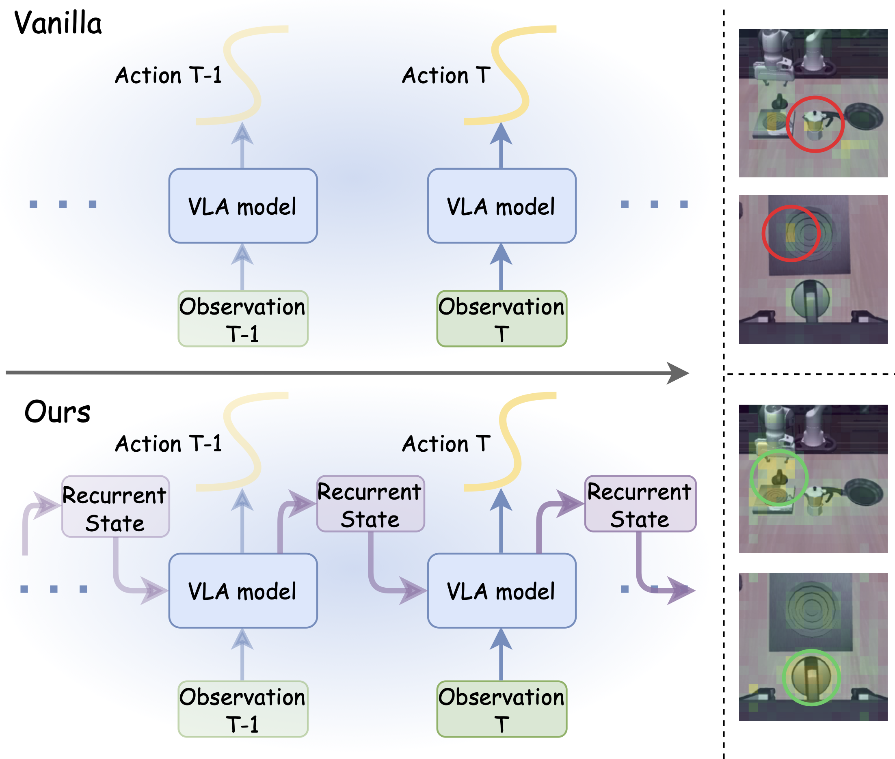
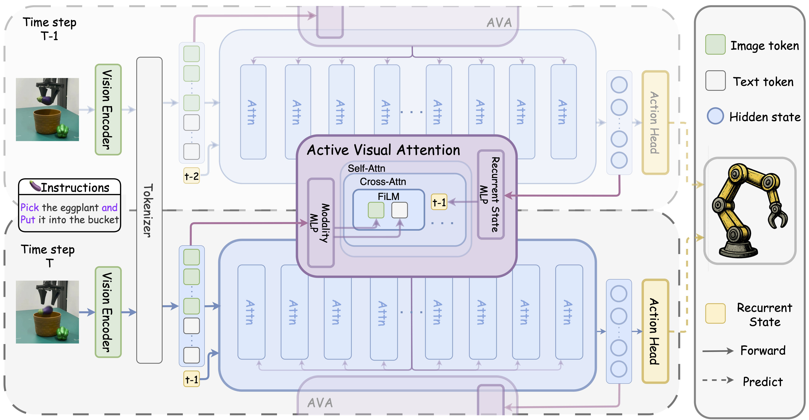
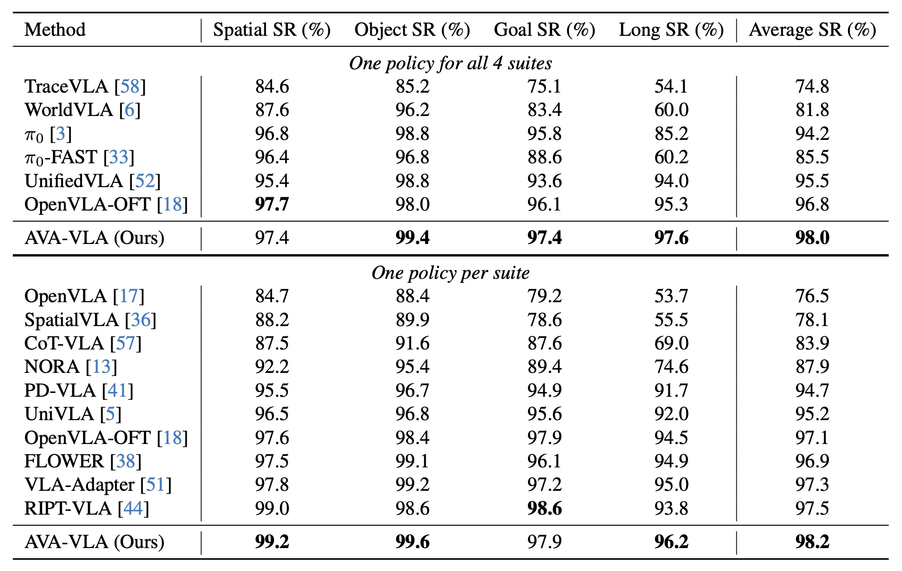
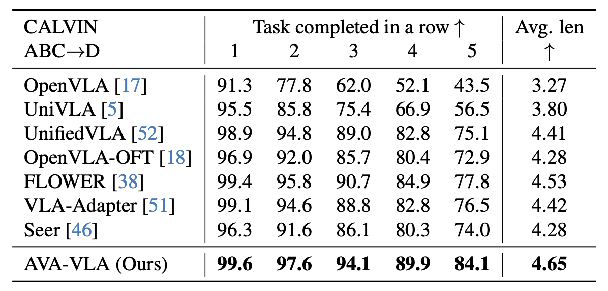
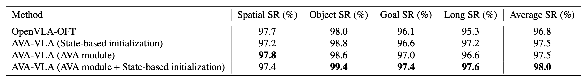
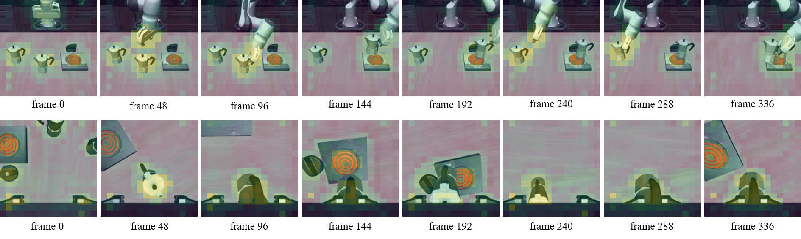
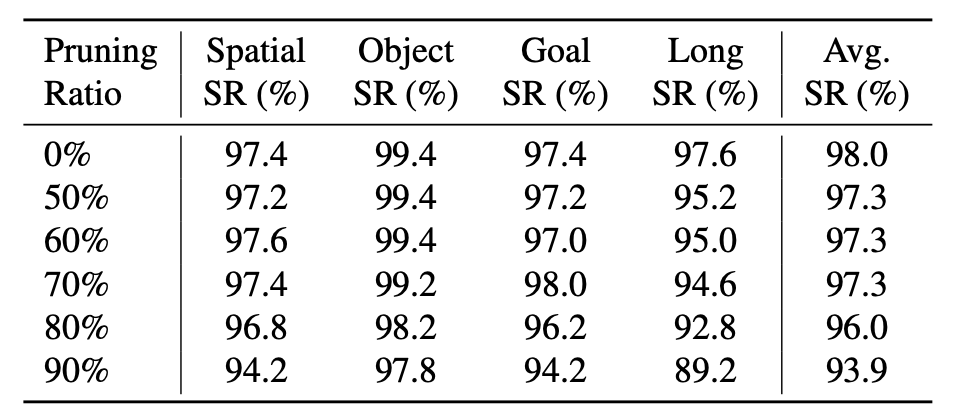

POMDP Perspective for VLA
AVA-VLA reformulates vision-language-action policy learning from a partially observable perspective and uses a recurrent state to summarize task history for action generation.
CVPR 2026 (Highlight)
1Li Auto Inc. 2Beijing University of Technology 3The Chinese University of Hong Kong, Shenzhen

Figure 1. (a) Visualized comparison of the proposed AVA-VLA framework and vanilla VLAs. (b) Qualitative comparison of visual focus from two viewpoints while executing the task “turn on the stove and put the moka pot on it.” The vanilla OpenVLA-OFT [20] baseline fails to locate the task-critical “stove” switch, whereas AVA-VLA exhibits more stable focus by leveraging historical context.
Vision-Language-Action (VLA) models have shown remarkable progress in embodied tasks recently, but most methods process visual observations independently at each timestep. This history-agnostic design treats robot manipulation as a Markov Decision Process, even though real-world robotic control is inherently partially observable and requires reasoning over past interactions. To address this mismatch, we reformulate VLA policy learning from a Partially Observable Markov Decision Process perspective and propose AVA-VLA, a framework that conditions action generation on a recurrent state that serves as a neural approximation to the agent’s belief over task history. Built on this recurrent state, we introduce Active Visual Attention (AVA), which dynamically reweights visual tokens in the current observation to focus on regions most relevant given both the instruction and execution history. Extensive experiments show that AVA-VLA achieves state-of-the-art performance on standard robotic benchmarks, including LIBERO and CALVIN, and transfers effectively to real-world dual-arm manipulation tasks. These results demonstrate the effectiveness of temporally grounded active visual processing for improving VLA performance in robotic sequential decision-making.
AVA-VLA reformulates vision-language-action policy learning from a partially observable perspective and uses a recurrent state to summarize task history for action generation.
The AVA module dynamically reweights current visual tokens using both the textual instruction and execution history, improving attention to task-relevant regions.
The framework achieves strong results on LIBERO, CALVIN, and Mobile ALOHA real-world experiments, while also providing interpretable visual dynamics.

Figure 2. Overview of the proposed AVA-VLA framework. At each timestep, the recurrent state is projected from the previous hidden state to preserve historical context and to initialize the current action tokens. Then the AVA module combines this recurrent state with text-conditioned visual features from the current observation to generate soft importance scores, which modulate the visual attention matrices throughout the backbone LLM, enabling the model to focus on task-relevant regions based on both temporal context and current perception.

Table 1. Comparison on the LIBERO benchmark. The results are reported in two groups: one policy for all 4 suites, and one policy per suite. The best results in each column of each group are highlighted in bold.

Table 2. Comparison on the CALVIN ABCD benchmark. The results are reported in terms of success rates (%) and average length. The best results in each column are highlighted in bold.

Figure 3. Comparison on the Mobile ALOHA real-world experiments. Evaluation across four manipulation tasks, including (a) Pick and Place, (b) Sequenced Instruction Understanding, (c) Flexible Object Folding, (d) Dexterous Action. Left: Representative middle states for each task setup. Right: Task-specific success rates and cross-task averages for our method and baselines.

Table 4. Ablation study on the two key components in the AVA-VLA framework. The results on the LIBERO benchmark in terms of success rates (%) under the “one policy for all 4 suites” setting are reported. The best results in each column are highlighted in bold.

Figure 4. Visual dynamics. The evolution of soft weights during the task “put both moka pots on the stove” from two viewpoints.

Table 5. Study on the visual token pruning with different pruning ratios. The results on the LIBERO in terms of success rates (%) under the “one policy for all 4 suites” setting are reported.
Representative real-world dual-arm manipulation demos in the Mobile ALOHA experiments.
Scoop corn into bowl.
Put yellow banana into bucket.
Stack tower of hanoi.
Fold towel twice.
Qualitative rollouts on representative LIBERO benchmark manipulation tasks.
Turn on the stove and put the moka pot on it.
Put both moka pots on the stove.
Put the black bowl in the bottom drawer of the cabinet and close it.
@article{xiao2025ava,
title={AVA-VLA: Improving Vision-Language-Action models with Active Visual Attention},
author={Xiao, Lei and Li, Jifeng and Gao, Juntao and Ye, Feiyang and Jin, Yan and Qian, Jingjing and Zhang, Jing and Wu, Yong and Yu, Xiaoyuan},
journal={arXiv preprint arXiv:2511.18960},
year={2025}
}